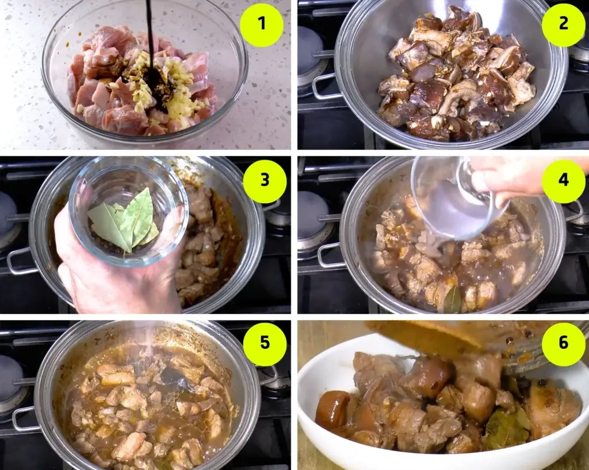

Pork Adobo
The word Adobo was derived from the Spanish word “adobar”. It means to marinate.
This can be in the form of a liquid marinade or to rub using a combination of powdered ingredient.
This version of Filipino Adobo version suggests marinating the pork in soy sauce and crushed garlic.
By preference, vinegar can also be added as a marinade ingredient.

Ingredients:
- 2 lbs pork belly
- 2 tablespoons garlic
- 5 dried bay leaves
- 4 tablespoons vinegar
- 1/2 cup soy sauce
- 1 tablespoon peppercorn
- 2 cups water
- Salt to taste

- The first thing to do is marinate the pork belly in soy sauce and crushed garlic. It is best to marinate it overnight. If time is limited, one hour should be enough. Some like to add vinegar during the process. You may do so if preferred.
- Drain the marinade. Save it for later. The marinated pork needs to be browned. Heat a cooking pot. Add pork with garlic. You can also add a few tablespoons of cooking oil. Cook the pork until it turns brown.
- Cook the pork until tender. Do this by pouring the remaining marinade, if any. Also add water. Let the liquid boil.
This is the part where I put the whole peppercorn and dried bay leaves. These ingredients complete my pork adobo. Boiling for 40 minutes should be enough to tenderize the pork. There are times when you have to cook longer
- If you have not added the vinegar as part of the marinade, pour it into the pot and let it cook for 10 minutes. Salt is an optional ingredient for this recipe. Use it only if you think it is needed.
- Taste the sauce first so that you know what seasonings to add. Since we already added a good amount of soy sauce, salt might not be needed. However, this depends on your preference. You can also add more water here if you think that then saltiness is on the upper side. Sometimes I also add a dash of sugar to balance the flavor.
- Plate, serve, and enjoy!